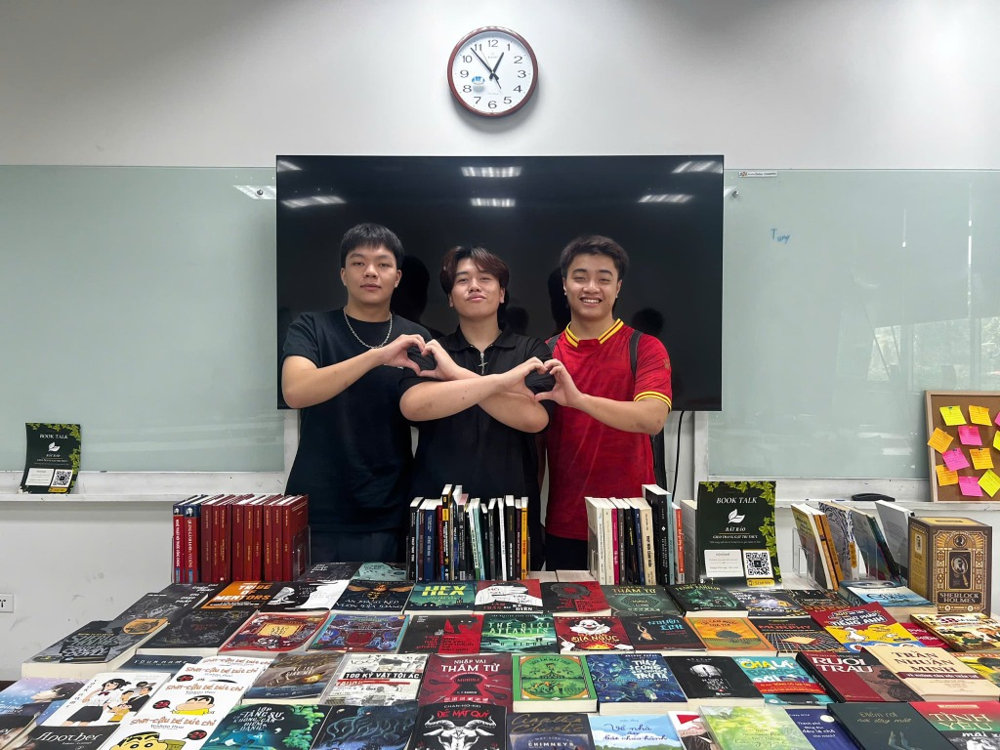

Bát Bảo —
Gieo Trang, Gặt Tri Thức
Nơi lưu giữ, nâng niu và lan tỏa những trang văn sống mãi với thời gian. Sinh ra từ tâm huyết của những người trẻ khao khát mang tri thức văn học Việt Nam chạm tới mọi độc giả — hoàn toàn tự do và miễn phí.
Video tổng kết sự kiện Book Talk - Dự án Bát Bảo
Tủ sách số mở từ trái tim sinh viên
Dự án Bát Bảo bắt đầu từ một niềm trăn trở nhỏ của nhóm sinh viên yêu văn chương: Làm sao để các tác phẩm văn học kinh điển, truyện dân gian sâu sắc cũng như văn học hiện đại có thể tiếp cận độc giả một cách trọn vẹn, thuận tiện và không có rào cản chi phí?
Với thông điệp "Gieo trang - Gặt tri thức", chúng tôi coi mỗi tác phẩm là một hạt giống tư tưởng. Khi bạn gieo một trang sách vào tâm trí, cái bạn nhận về không chỉ là kiến thức, mà là sự thấu cảm và chiều sâu tâm hồn.
Ý Nghĩa "Bát Bảo"
8 Kho tàng tri thức & Giá trị văn học cốt lõi nhóm theo đuổi:
Hình Ảnh & Video Nhóm Dự Án
Chuỗi sự kiện Book Talk - "Gieo Trang, Gặt Tri Thức" tại không gian lớp học SSG105 cùng thành viên nhóm Bát Bảo và độc giả.
Video Tổng Kết Sự Kiện Book Talk (SSG105)
Album Ảnh Sự Kiện & Thành Viên
Giao Lưu & Chia Sẻ Sách
Các thành viên hào hứng giới thiệu những tác phẩm hay tới độc giả.
Trưng Bày Tủ Sách
Mô hình gian trưng bày sách đa dạng thể loại tại lớp học SSG105.
Gieo Trang - Gặt Tri Thức
Standee và mã QR Scan Me để độc giả quét mã đọc sách online nhanh chóng.

Góc Đọc Tinh Tế
Bàn trưng bày hàng chục đầu sách phong phú cho người đọc tự do trải nghiệm.
Tủ Sách Bát Bảo
"Mỗi cuốn sách là một hòn đảo kho báu."
Không tìm thấy tác phẩm phù hợp
Thử tìm kiếm với từ khóa khác hoặc chuyển sang danh mục khác.
Gửi Đóng Góp & Tác Phẩm
Bạn biết một tác phẩm văn học hay hoặc muốn góp ý cho nhóm sinh viên Bát Bảo? Hãy chia sẻ cùng chúng tôi!